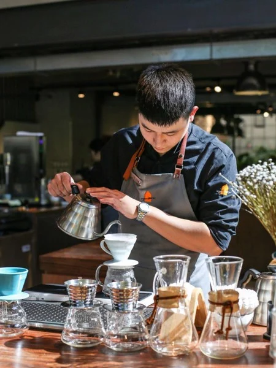
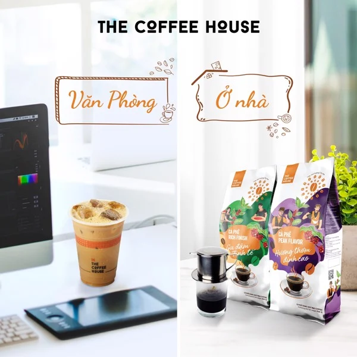

Tin tức | Coffeeholic
Có nhiều cách để pha một ly cà phê ngon, nhưng đối với nhiều người Việt giây phút đợi chờ những giọt cà phê rơi từ chiếc phin đã trở thành nét văn hóa ăn sâu trong tiềm thức. Để tạo nên một ly cà phê phin chuẩn vị, không chỉ cần sự tinh tế trong cách chọn loại cà phê mà còn cả sự tỉ mỉ trong từng bước pha.
Cà phê phin là gì?
Phin pha cà phê bao gồm các bộ phận như thân phin, nắp gài, đĩa lót đáy, nắp phin. Với chất liệu bằng nhôm hay inox sẽ có tác dụng giữ nóng nước pha cà phê và chắt lọc được những chất tinh túy nhất của cà phê. Đĩa lót đáy được đặt bên dưới thân phin với những lỗ siêu nhỏ sẽ giúp bột cà phê không lọt xuống ly, cho cảm nhận trọn vẹn khi uống.
Cà phê phin đặc biệt ở chỗ người ta có thể thưởng thức chậm rãi từ mùi thơm quyến rũ của cà phê rang xay đúng độ đến vị đắng nhẹ, đậm đà của từng giọt thấm nơi đầu lưỡi,... Trong khi đó, những cách pha cà phê khác với nhiều biến tấu, dễ làm vơi đi nguyên vị của cà phê.
Cách pha cà phin thơm ngon
Để có thể pha và nhâm nhi những ly cà phê phin thơm ngon, nồng đượm mỗi sáng tại nhà, khơi nguồn cho một ngày làm việc hiệu quả, bạn hãy chuẩn bị khoảng tầm 25g cà phê bột cùng 80 – 100ml nước, sau đó tiến hành pha cà phê phin theo các bước như sau:
Bước 1: Tráng phin cà phê và chiếc ly dùng để pha cà phê bằng nước sôi. Như vậy, giúp phin nóng đều đảm bảo cà phê được thơm ngon khi pha.
Bước 2: Cho cà phê đã chuẩn bị vào phin, lắc nhẹ phin để tạo mặt phẳng phía trên, sau đó dùng nắp gài ép một lực vừa phải lên trên bột cà phê. Thực hiện bước này để khi cho nước vào phin, nước thấm đều bột cà phê và sẽ không làm cà phê nhỏ giọt quá nhanh.
Bước 3: Rót tầm khoảng 20ml nước đun sôi vào và ủ cà phê trong khoảng 2 phút. Nên rót chậm rãi để cà phê nở đều mà không bị trào ra. Ngoài ra, để cà phê bên dưới đáy phin cũng có thể hấp thụ nước đồng đều, bạn có thể đổ ít nước sôi vào nắp cà phê rồi đặt phin pha cà phê lên trên.
Bước 4: Khi cà phê đã nở và hấp thụ hết nước thì cho khoảng 80ml nước vào phin. Đậy nắp lại và đợi tầm 5 phút để cà phê nhiễu xuống, sau đó cho đường vào để thưởng thức. Nếu bạn thích uống cà phê sữa thì trước khi đặt phin pha chế, có thể cho vào ly thủy tinh một ít sữa đặc. Bí quyết để có ly cà phê ngon là thời gian từ khi rót nước cho đến khi được thành phẩm khoảng 5 – 7 phút. Nếu thời gian quá nhanh thì cà phê sẽ chua, ngược lại nếu thời gian chảy quá chậm thì cà phê sẽ bị đắng.
Ngoài ra, bạn nên lưu ý sử dụng phin pha cà phê bằng nhôm vì nó sẽ cho hương vị cà phê thơm ngon nhất. Đặc biệt, điều quan trọng nhất để có được những ly cà phê phin tuyệt vời đó là không quên lựa chọn loại cà phê chất lượng. Trên thị trường hiện nay có rất nhiều loại cà phê khác nhau, từ cà phê hạt đến cà phê bột, cà phê Moka, cà phê Robusta hay Arabica… The Coffee House giới thiệu bạn những dòng cà phê thượng hạng được ra đời từ mảnh đất bazan nắng gió Tây Nguyên. Tất cả đều được chế biến từ những hạt cà phê nguyên chất, đạt chuẩn về chất lượng và kỹ thuật rang xay, chế biến hiện đại nhất.
Bạn có thể chọn sản phẩm cà phê từ 100% hạt Arabica, được chọn lọc kỹ lưỡng tại vùng Cầu Đất trồng trên độ cao 1650m. Với vị đắng nhẹ, hậu vị chua thanh, ngọt dịu, cà phê Arabica của Nhà sẽ giúp bạn tạo ra những tách cà phê pha phin tinh tế yêu thích cho riêng mình.
Bên cạnh đó, nếu là người thích gu cà phê đắng, đậm và mạnh bạn có thể chọn dòng Original 1 của The Coffee House với 100% thành phần cà phê Robusta Đắk Lắk, vùng đất nổi danh trồng cà phê ngon nhất Việt Nam. Bằng cách áp dụng kỹ thuật rang xay hiện đại, Cà phê Original 1 mang đến trải nghiệm tuyệt vời khi uống cà phê tại nhà với hương vị đậm đà truyền thống.

Ngoài ra, đội ngũ chuyên gia của The Coffee House đã hòa trộn tỉ lệ hoàn hảo giữa hai loại cà phê Arabica và Robusta để cho ra đời dòng sản phẩm Rich Finish và Peak Flavor.
Cà phê Peak Flavor sở hữu những nốt hương đỉnh cao, lưu giữ trọn vẹn hương thơm tinh tế đặc trưng của cà phê Robusta Đăk Nông và Arabica Cầu Đất. Còn cà phê Rich Finish sẽ mang đến những ly cà phê đậm đà, hương vị đầy lưu luyến giúp bạn bắt đầu ngày mới đầy hứng khởi và một ngày dài trọn vẹn với cảm hứng tươi mới.